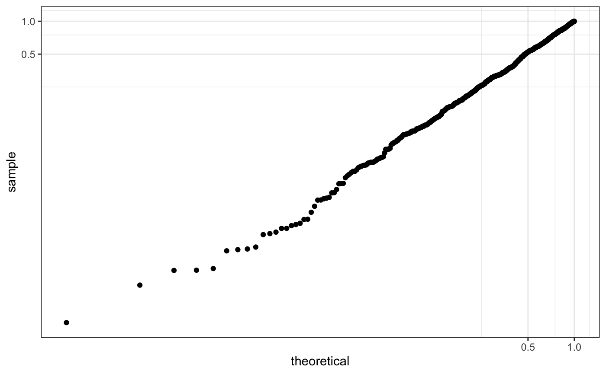

ggGWAS Internals
Sina Rueger
2019-07-29
gggwas-internals.Rmdlibrary(ggplot2)
#> Warning: package 'ggplot2' was built under R version 3.5.2
library(ggGWAS)
library(GWAS.utils)
theme_set(theme_bw())This vignette contains some technical aspects about developing the ggGWAS package.
New scale -log10
There are different scales available in ggplot2 that apply a log10 transformation.
-
scale_x_log10andscale_y_log10 -
scale_x_continuous(trans = "log10")andscale_y_continuous(trans = "log10") coord_trans(x = "log10", y = "log10")
They all to slightly different things.
First, there is scale_x_continuous, which simply applies the log10 function to the data. Available transformations include “asn”, “atanh”, “boxcox”, “exp”, “identity”, “log”, “log10”, “log1p”, “log2”, “logit”, “probability”, “probit”, “reciprocal”, “reverse” and “sqrt” (from ?scale_x_continuous)
set.seed(3)
df <- data.frame(y = runif(1000))
qp <- ggplot(df, aes(sample = y)) +
stat_qq(distribution = stats::qunif)
qp + scale_x_continuous(trans = "log10") + scale_y_continuous(trans = "log10")
Second, there is scale_{x|y}_log10, which simply applies the log10 function to the data.
qp + scale_x_log10() + scale_y_log10()Third, there is coord_trans, that takes as input the transformation (which start with scales::*_trans). Note that the grid is different.
qp + coord_trans(x = "log10", y = "log10")
For our Q-Q plot we want to create a new transformation that performs a -log10 transformation, which we will call mlog10.
Either we use scale_y_continuous
qp +
scale_y_continuous(trans = "mlog10") +
scale_x_continuous(trans = "mlog10") +
geom_abline(intercept = 0, slope = 1)
or coord_trans (not sure why this won’t work)
qp +
coord_trans(x = "mlog10", y = "mlog10") +
geom_abline(intercept = 0, slope = 1)
R object size, rendering speed and image file size
Three major problems with ggplot2 plots of large datasets are 1) object size, 2) rendering speed and 3) the resulting image file size (e.g. pdf or png).
Passing on a large dataset to ggplot2 will create a large object (because the dataset will actually - in various forms - become part of the object). To manipulate this, would mean to manipulate some core parts of ggplot2.
However, rendering a large object does not necessarily take long. For example, we can avoid plotting each single observation by using hexagons.
A more complex topic is rastering. Rastering actually increases the time to render a plot, but decreases the file output size.
In the following we are going through options to optimise plotting and then measure object size, rendering speed and file output size (as a pdf).
Here are the options:
- Using rastering (
ggrastr:::GeomPointRast) - Using hexagons (
ggplot::geom_hex) - Subsetting data
- Avoiding passing on the full datasets
And here are the the metrics used to measure object size, rendering time and file output size.
print_object_size <- function(x) {
pryr::object_size(x) ## in bytes
## do not use object.size(), as not accurate, or use pryr::compare_size(x)
}
print_rendering_time <- function(x) {
system.time(x)
}
## check out a better benchmarking time post: https://www.alexejgossmann.com/benchmarking_r/
## maybe microbenchmark package?
print_file_size <- function(gg) {
invisible(ggsave("tmp.pdf", gg, width = 4, height = 4))
cat(file.info("tmp.pdf")$size / 1024, " Kb.\n", sep = "")
unlink("tmp.pdf")
}Benchmark: base graphics
Our benchmark is the base plot version from the qqman package:
n.sample <- 1e3
set.seed(3)
df <- data.frame(P = runif(n.sample), GWAS = sample(c("a","b"), n.sample, replace = TRUE))
## Object size
print_object_size(qqman::qq(df$P))
#> 0 B
## Rendering speed
print_rendering_time(qqman::qq(df$P))#> user system elapsed
#> 0.065 0.009 0.085
## File output size
print_file_size(qqman::qq(df$P))
#> 10.79199 Kb.ggplot2 example
qp_points <- ggplot(df, aes(y = P)) +
stat_gwas_qq() +
geom_abline(intercept = 0, slope = 1)
## Object size
print_object_size(qp_points)
#> 914 kB
## Rendering speed
print_rendering_time(print(qp_points))#> user system elapsed
#> 0.100 0.006 0.113
## File output size
print_file_size(qp_points)
#> 10.51758 Kb.1. Raster
The R-package ggrastr does ???. (for the price of longer rendering time).
It creates very light output, but is not necessarily fast.
We can use the rastering functionality as geom in our function.
qp_raster <- ggplot(df, aes(y = P)) +
stat_gwas_qq(geom = ggrastr:::GeomPointRast) +
geom_abline(intercept = 0, slope = 1)
## Object size
print_object_size(qp_raster)
#> 1.09 MB
## Rendering speed
print_rendering_time(print(qp_raster))#> user system elapsed
#> 0.351 0.028 0.387
## File output size
print_file_size(qp_raster)
#> 22.78516 Kb.2. Hexagons
qp_hex <- ggplot(df, aes(y = P)) +
stat_gwas_qq_hex() +
geom_abline(intercept = 0, slope = 1)
## Object size
print_object_size(qp_hex)
#> 961 kB
## Rendering speed
print_rendering_time(print(qp_hex))#> user system elapsed
#> 0.139 0.015 0.162
## File output size
print_file_size(qp_hex)
#> 7.183594 Kb.Problem is, that the original dataset is still passed on. This is not a problem in terms of speed, but can be for memory. More about this further down.
Note, that the used hex.function called hexBinSummarise_custom does not have the usual properties, in that it will have the hexagon shape, but not any count legend. Also has a tweaked hexbinheight. If hex.function = hexBinSummarise is used, the plot will have the usual properties.
## old version
ggplot(data = GWAS.utils::giant) + stat_gwas_qq_hex(aes(y = P), hex.function = ggplot2:::hexBinSummarise) 
## new version
#ggplot(data = GWAS.utils::giant) + stat_gwas_qq_hex(aes(y = P))
## same as
ggplot(data = GWAS.utils::giant) + stat_gwas_qq_hex(aes(y = P), hex.function = ggGWAS:::hexBinSummarise) 
3. Subsetting data
Something very simple is to subset the data, since we are usually not interested in the very high P-values (although, we are at times, when it comes to model sanity checks).
qp_subset <- ggplot(df, aes(y = P)) +
stat_gwas_qq(y.thresh = 0.05) +
geom_abline(intercept = 0, slope = 1)
## Object size
print_object_size(qp_subset)
#> 914 kB
## Rendering speed
print_rendering_time(print(qp_subset))#> user system elapsed
#> 0.077 0.005 0.089
## File output size
print_file_size(qp_subset)
#> 4.94043 Kb.4. Avoiding passing on the full datasets (???)
What makes a ggplot2 object really heavy, is that the dataset is passed on several times into the object.
## data structure
ggplot_build(qp_hex) %>% str()
#> List of 3
#> $ data :List of 2
#> ..$ :'data.frame': 120 obs. of 9 variables:
#> .. ..$ x : num [1:120] -0.000001 0.016633 0.049901 0.033267 0.066535 ...
#> .. ..$ y : num [1:120] -0.000001 0.023912 0.023912 0.047825 0.047825 ...
#> .. ..$ fill : chr [1:120] "black" "black" "black" "black" ...
#> .. ..$ PANEL : Factor w/ 1 level "1": 1 1 1 1 1 1 1 1 1 1 ...
#> .. ..$ group : int [1:120] -1 -1 -1 -1 -1 -1 -1 -1 -1 -1 ...
#> .. ..$ colour : logi [1:120] NA NA NA NA NA NA ...
#> .. ..$ size : num [1:120] 0.5 0.5 0.5 0.5 0.5 0.5 0.5 0.5 0.5 0.5 ...
#> .. ..$ linetype: num [1:120] 1 1 1 1 1 1 1 1 1 1 ...
#> .. ..$ alpha : logi [1:120] NA NA NA NA NA NA ...
#> ..$ :'data.frame': 1 obs. of 8 variables:
#> .. ..$ intercept: num 0
#> .. ..$ slope : num 1
#> .. ..$ PANEL : Factor w/ 1 level "1": 1
#> .. ..$ group : int -1
#> .. ..$ colour : chr "black"
#> .. ..$ size : num 0.5
#> .. ..$ linetype : num 1
#> .. ..$ alpha : logi NA
#> $ layout:Classes 'Layout', 'ggproto', 'gg' <ggproto object: Class Layout, gg>
#> coord: <ggproto object: Class CoordCartesian, Coord, gg>
#> aspect: function
#> backtransform_range: function
#> clip: on
#> default: TRUE
#> distance: function
#> expand: TRUE
#> is_free: function
#> is_linear: function
#> labels: function
#> limits: list
#> modify_scales: function
#> range: function
#> render_axis_h: function
#> render_axis_v: function
#> render_bg: function
#> render_fg: function
#> setup_data: function
#> setup_layout: function
#> setup_panel_params: function
#> setup_params: function
#> transform: function
#> super: <ggproto object: Class CoordCartesian, Coord, gg>
#> coord_params: list
#> facet: <ggproto object: Class FacetNull, Facet, gg>
#> compute_layout: function
#> draw_back: function
#> draw_front: function
#> draw_labels: function
#> draw_panels: function
#> finish_data: function
#> init_scales: function
#> map_data: function
#> params: list
#> setup_data: function
#> setup_params: function
#> shrink: TRUE
#> train_scales: function
#> vars: function
#> super: <ggproto object: Class FacetNull, Facet, gg>
#> facet_params: list
#> finish_data: function
#> get_scales: function
#> layout: data.frame
#> map_position: function
#> panel_params: list
#> panel_scales_x: list
#> panel_scales_y: list
#> render: function
#> render_labels: function
#> reset_scales: function
#> setup: function
#> setup_panel_params: function
#> train_position: function
#> xlabel: function
#> ylabel: function
#> super: <ggproto object: Class Layout, gg>
#> $ plot :List of 9
#> ..$ data :'data.frame': 1000 obs. of 2 variables:
#> .. ..$ P : num [1:1000] 0.168 0.808 0.385 0.328 0.602 ...
#> .. ..$ GWAS: Factor w/ 2 levels "a","b": 1 1 1 1 2 1 2 1 2 2 ...
#> ..$ layers :List of 2
#> .. ..$ :Classes 'LayerInstance', 'Layer', 'ggproto', 'gg' <ggproto object: Class LayerInstance, Layer, gg>
#> aes_params: list
#> compute_aesthetics: function
#> compute_geom_1: function
#> compute_geom_2: function
#> compute_position: function
#> compute_statistic: function
#> data: waiver
#> draw_geom: function
#> finish_statistics: function
#> geom: <ggproto object: Class GeomHex, Geom, gg>
#> aesthetics: function
#> default_aes: uneval
#> draw_group: function
#> draw_key: function
#> draw_layer: function
#> draw_panel: function
#> extra_params: na.rm
#> handle_na: function
#> non_missing_aes:
#> optional_aes:
#> parameters: function
#> required_aes: x y
#> setup_data: function
#> use_defaults: function
#> super: <ggproto object: Class Geom, gg>
#> geom_params: list
#> inherit.aes: TRUE
#> layer_data: function
#> map_statistic: function
#> mapping: NULL
#> position: <ggproto object: Class PositionIdentity, Position, gg>
#> compute_layer: function
#> compute_panel: function
#> required_aes:
#> setup_data: function
#> setup_params: function
#> super: <ggproto object: Class Position, gg>
#> print: function
#> setup_layer: function
#> show.legend: NA
#> stat: <ggproto object: Class StatGwasQqplotHex, Stat, gg>
#> aesthetics: function
#> compute_group: function
#> compute_layer: function
#> compute_panel: function
#> default_aes: uneval
#> extra_params: na.rm
#> finish_layer: function
#> non_missing_aes:
#> parameters: function
#> required_aes: y
#> retransform: TRUE
#> setup_data: function
#> setup_params: function
#> super: <ggproto object: Class Stat, gg>
#> stat_params: list
#> super: <ggproto object: Class Layer, gg>
#> .. ..$ :Classes 'LayerInstance', 'Layer', 'ggproto', 'gg' <ggproto object: Class LayerInstance, Layer, gg>
#> aes_params: list
#> compute_aesthetics: function
#> compute_geom_1: function
#> compute_geom_2: function
#> compute_position: function
#> compute_statistic: function
#> data: data.frame
#> draw_geom: function
#> finish_statistics: function
#> geom: <ggproto object: Class GeomAbline, Geom, gg>
#> aesthetics: function
#> default_aes: uneval
#> draw_group: function
#> draw_key: function
#> draw_layer: function
#> draw_panel: function
#> extra_params: na.rm
#> handle_na: function
#> non_missing_aes:
#> optional_aes:
#> parameters: function
#> required_aes: slope intercept
#> setup_data: function
#> use_defaults: function
#> super: <ggproto object: Class Geom, gg>
#> geom_params: list
#> inherit.aes: FALSE
#> layer_data: function
#> map_statistic: function
#> mapping: uneval
#> position: <ggproto object: Class PositionIdentity, Position, gg>
#> compute_layer: function
#> compute_panel: function
#> required_aes:
#> setup_data: function
#> setup_params: function
#> super: <ggproto object: Class Position, gg>
#> print: function
#> setup_layer: function
#> show.legend: FALSE
#> stat: <ggproto object: Class StatIdentity, Stat, gg>
#> aesthetics: function
#> compute_group: function
#> compute_layer: function
#> compute_panel: function
#> default_aes: uneval
#> extra_params: na.rm
#> finish_layer: function
#> non_missing_aes:
#> parameters: function
#> required_aes:
#> retransform: TRUE
#> setup_data: function
#> setup_params: function
#> super: <ggproto object: Class Stat, gg>
#> stat_params: list
#> super: <ggproto object: Class Layer, gg>
#> ..$ scales :Classes 'ScalesList', 'ggproto', 'gg' <ggproto object: Class ScalesList, gg>
#> add: function
#> clone: function
#> find: function
#> get_scales: function
#> has_scale: function
#> input: function
#> n: function
#> non_position_scales: function
#> scales: list
#> super: <ggproto object: Class ScalesList, gg>
#> ..$ mapping :List of 1
#> .. ..$ y: language ~P
#> .. .. ..- attr(*, ".Environment")=<environment: R_GlobalEnv>
#> .. ..- attr(*, "class")= chr "uneval"
#> ..$ theme : list()
#> ..$ coordinates:Classes 'CoordCartesian', 'Coord', 'ggproto', 'gg' <ggproto object: Class CoordCartesian, Coord, gg>
#> aspect: function
#> backtransform_range: function
#> clip: on
#> default: TRUE
#> distance: function
#> expand: TRUE
#> is_free: function
#> is_linear: function
#> labels: function
#> limits: list
#> modify_scales: function
#> range: function
#> render_axis_h: function
#> render_axis_v: function
#> render_bg: function
#> render_fg: function
#> setup_data: function
#> setup_layout: function
#> setup_panel_params: function
#> setup_params: function
#> transform: function
#> super: <ggproto object: Class CoordCartesian, Coord, gg>
#> ..$ facet :Classes 'FacetNull', 'Facet', 'ggproto', 'gg' <ggproto object: Class FacetNull, Facet, gg>
#> compute_layout: function
#> draw_back: function
#> draw_front: function
#> draw_labels: function
#> draw_panels: function
#> finish_data: function
#> init_scales: function
#> map_data: function
#> params: list
#> setup_data: function
#> setup_params: function
#> shrink: TRUE
#> train_scales: function
#> vars: function
#> super: <ggproto object: Class FacetNull, Facet, gg>
#> ..$ plot_env :<environment: R_GlobalEnv>
#> ..$ labels :List of 5
#> .. ..$ y : chr "P"
#> .. ..$ x : chr "x"
#> .. ..$ weight : chr "weight"
#> .. ..$ intercept: chr "intercept"
#> .. ..$ slope : chr "slope"
#> ..- attr(*, "class")= chr [1:2] "gg" "ggplot"
#> - attr(*, "class")= chr "ggplot_built"
object.size(ggplot_build(qp_hex))
#> 31824 bytes
object.size(ggplot_build(qp_points))
#> 97120 bytes
## grid object
## ggplot_gtable(ggplot_build(qp_hex)) %>% str()
object.size(ggplot_gtable(ggplot_build(qp_points)))
#> 802712 bytes
object.size(ggplot_gtable(ggplot_build(qp_hex)))
#> 767336 bytesNew color palette
See also: https://github.com/mkanai/ggman/blob/master/R/scale-colour-dichromatic.R
New theme
See also: https://github.com/mkanai/ggman/blob/master/R/theme-publication.R